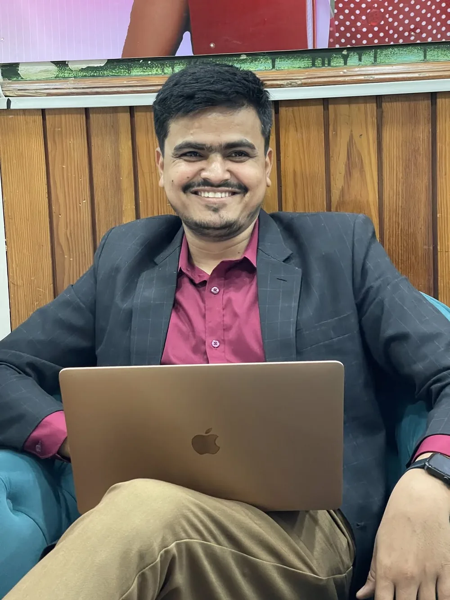
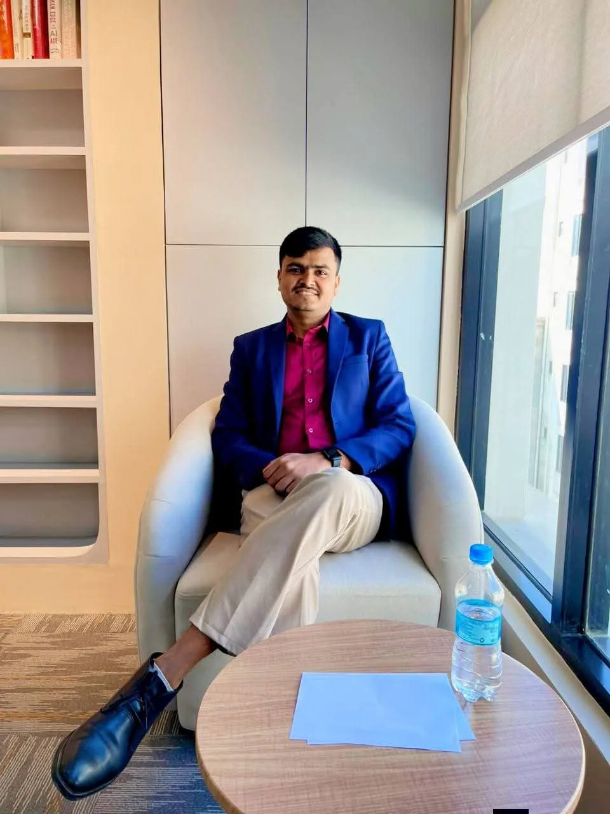

About me
Technology leader, full-stack engineer and IT strategist. Head of IT at Route 2 Uni and, since June 2026, a remote iOS developer intern with Apple.


- Based in
- Kathmandu, Nepal
- Role
- Head of IT, Route 2 Uni
- Also
- Project Manager, Dreams Care Homes (UK)
- Internship
- iOS Developer Intern, Apple (remote)
- Education
- BIT, Janamaitri Multiple Campus
- Open to
- Remote roles, freelance projects
I'm Hemraj Adhikari, Head of IT at Route 2 Uni International Group in Kathmandu. Most of my work sits where software meets day-to-day operations: I build the tools a team uses, then keep the infrastructure under them running.
I started on the helpdesk at Percoid IT Solution in Lalitpur in 2022, supporting more than 100 users across Windows, Active Directory, Microsoft 365 and Google Workspace. That job taught me that most technology problems are process problems: accounts nobody offboards, reports built by hand, the same data kept in five places.
Alongside that I have been building websites since 2021, first for businesses in Kathmandu and then for clients in India, Australia, the UK and Indonesia. The count is past 65 now, including a radio streaming platform for KBM FM, an exam-prep platform for Mega Loksewa, news portals, a music school in Pune, artists, shops and a municipality.
At Citizen Infotech I moved into CRM administration, data quality and management reporting. At Route 2 Uni I went from using CRMs to building one: the system the whole team now uses to follow students from enquiry to visa. I have led the IT department there since August 2026. I also manage the DreamsCareHome systems project for Dreams Care Homes in Wales, and since June 2026 I have been a remote iOS developer intern with Apple.
I keep studying alongside work. I studied for a Bachelor of Information Technology at Janamaitri Multiple Campus (Bagmati University), an affiliated degree with International American University. On Coursera I have completed six professional certificates from Google and IBM, in data analytics, cybersecurity, AI, project management and AI development, and more than 50 courses in total.
Outside work I write practical guides for people starting in IT in Nepal on the blog.
How I work
Start from the workflow
Before designing a screen I sit with the people who will use it. Most software problems turn out to be process problems nobody wrote down.
Ship small, then harden
A working version in weeks rather than months. Access control, backups and monitoring go in before it grows, not after something breaks.
Leave it maintainable
Plain code, written documentation and accounts in the client's name, so the next person can pick it up without me.
Let's work together
I'm open to remote roles and a small number of freelance projects. Email is best; I usually reply within a day.